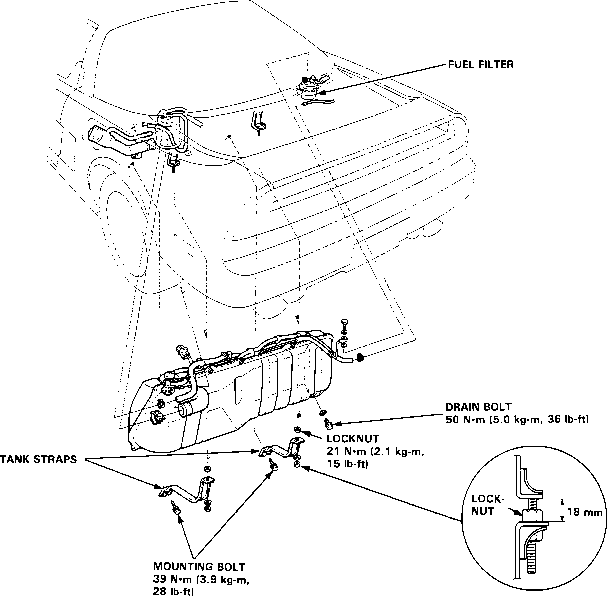

Fuel Tank: Testing and Inspection
Fuel Tank Replacement:

1. Inspect the fuel tank for leaks at seams and fittings.
2. Inspect for any physical damage including dents, holes, rust, etc.
3. Inspect hoses for proper connections and condition.
4. Inspect mounting straps and bolts for proper attachment and torque.